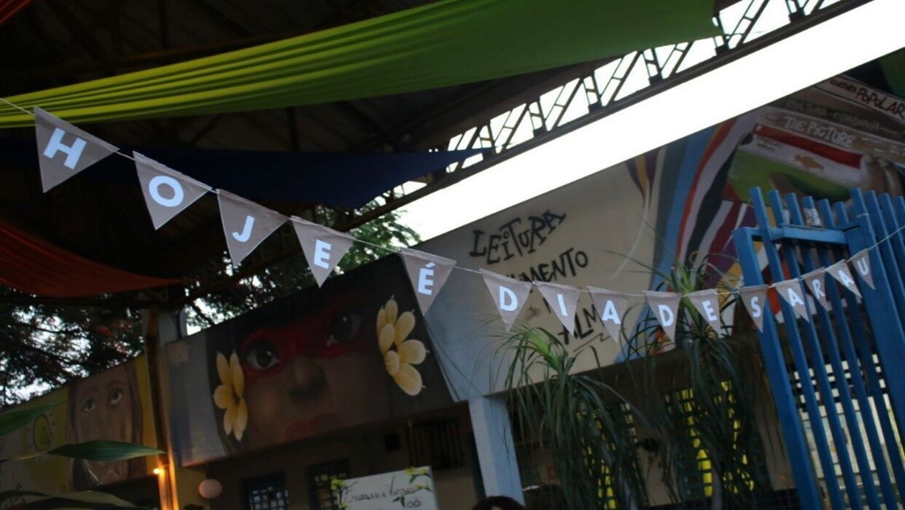

O SARAU: UMA CELEBRAÇÃO DA ARTE E DA CULTURA
O sarau é uma forma de expressão artística que tem ganhado cada vez mais espaço na sociedade. Trata-se de um evento onde artistas de diferentes áreas se reúnem para compartilhar suas criações e promover um verdadeiro espetáculo de talento e criatividade. Com apresentações que vão desde poesias, livros e música composta pelo o próprio aluno e até performances circenses, o sarau se torna um verdadeiro festival de arte.
Sendo assim o nosso sarau que ocorreu no dia 17 de novembro no Marista Social Irmão Acácio , trouxe 23 apresentações, sendo elas variadas e diversificadas. A poesia é uma das formas mais comuns de expressão nesses eventos, onde poetas declamam suas obras e compartilham suas emoções com o público. Através das palavras, eles conseguem transmitir sentimentos profundos e despertar reflexões sobre diversos temas.
Além da poesia, o sarau também abre espaço para a literatura. As crianças compartilharam sua leitura sobre o livro que elas leram e incentivando outras pessoas há ler. É uma oportunidade única para os amantes da leitura conhecerem novos autores e se envolverem com diferentes narrativas.
Mas o sarau não se limita apenas às palavras escritas. O circo também marca presença nesses eventos, trazendo performances acrobáticas, malabarismos e outras habilidades circenses. É um momento de pura magia e encantamento, onde o público pode se maravilhar com a destreza e a habilidade dos artistas.
O sarau é muito mais do que um simples evento cultural. Ele é uma forma de resistência e de valorização da arte. É uma oportunidade de troca de experiências e de aprendizado, onde todos podem se inspirar e se emocionar com as apresentações.
Além disso, o sarau também promove a inclusão social. É um espaço de diversidade, onde diferentes culturas e identidades podem se encontrar e se expressar livremente.
É importante ressaltar que o sarau não é apenas para artistas profissionais. Qualquer pessoa que tenha algo a dizer ou a mostrar pode participar. É um ambiente acolhedor e receptivo, onde todos são bem-vindos e têm a oportunidade de se expressar.
Uma das características mais interessantes do sarau é a possibilidade de composições feitas pelos próprios alunos. Muitas vezes, os participantes do sarau são estudantes que têm a oportunidade de criar e apresentar suas próprias obras. Isso estimula a criatividade e o desenvolvimento artístico dos jovens, além de promover a valorização da expressão individual.
Portanto, o sarau é uma celebração da arte e da cultura, um evento que valoriza a diversidade e promove a inclusão. É uma oportunidade única de se envolver com diferentes formas de expressão e se emocionar com as apresentações. Seja através da poesia, dos livros, do circo ou composições ,o sarau é uma experiência enriquecedora que merece ser valorizada e apreciada por todos.
Data da Publicação: 13 de dezembro de 2023
Por Paula Boaro (2º ano C)